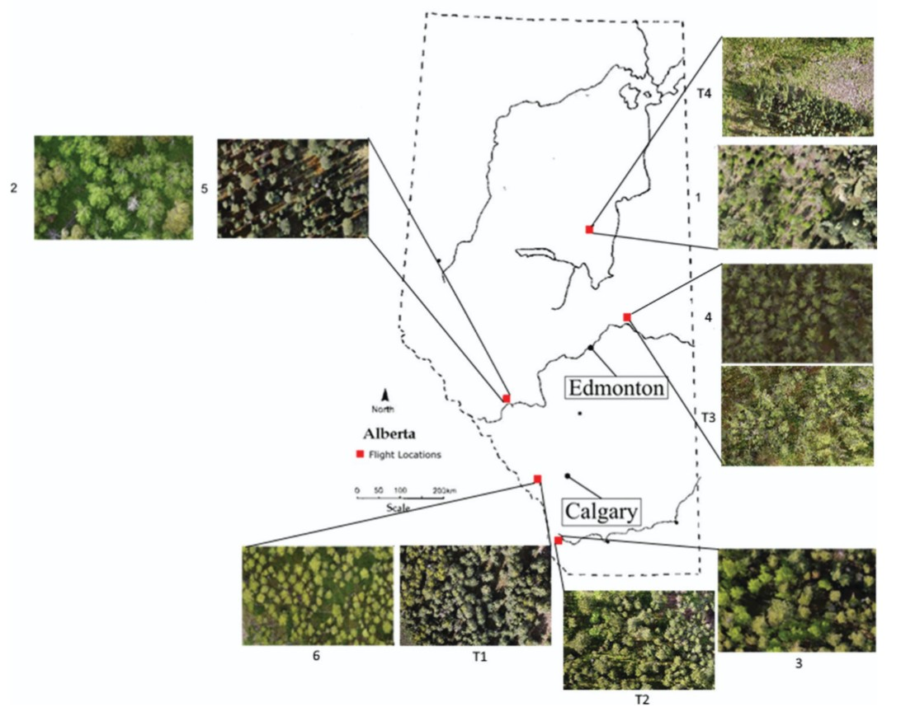
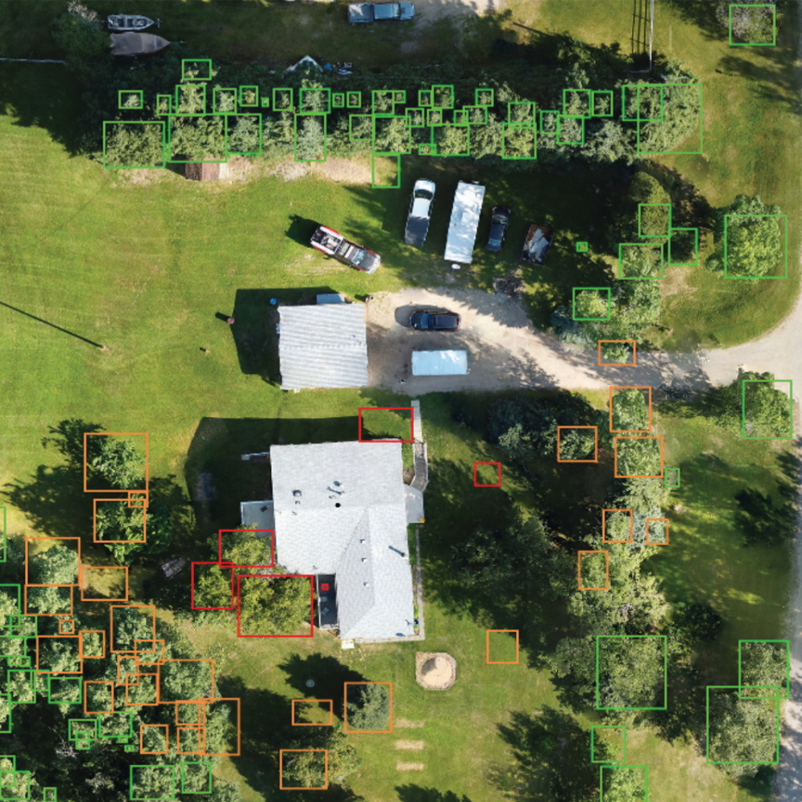

Wildfire fuel maps are required by decision-makers to predict how a fire will behave and to plan mitigation efforts. Traditionally, these are generated using either satellite imagery or through field sampling campaigns. The former is limited by the resolution of satellite sensors, while the latter requires costly and time-consuming field visits by trained professionals. This study set out to develop a high-resolution (individual tree scale) fuel mapping workflow using consumer-grade drones and deep learning.
A low-cost DJI Mavic Mini drone was flown over ten boreal forest sites in Alberta, capturing imagery at roughly 1.8 cm per pixel. This imagery was manually annotated to create a training dataset for a two-stage convolutional neural network (CNN) pipeline called ITAM-T. The first stage consisted of a RetinaNet-based model trained on local boreal data and enhanced with an "adaptive window size" technique to handle trees of varying sizes. The second stage used a VGG19 network to classify each detected tree as either coniferous or deciduous. Height, crown size, and stem density were then extracted from the detections using elevation data generated from photogrammetric point clouds.

The first stage of the pipeline, which focused on tree detection, achieved an average F1 score of 72% across the six test sites. The second stage (classification as coniferous or deciduous) correctly identified coniferous and deciduous trees with 97% and 87% accuracy, respectively. The combined pipeline reached average F1 scores of 72% for conifers and 57% for deciduous trees, with the drop in deciduous tree performance attributed to imperfect bounding boxes from the detection step due to deciduous trees tendency to overlap. Stem density predictions were strong, with an average R² of 0.90 compared to manual counts. The system was also demonstrated on a rural Alberta property, identifying trees by proximity to the residence for a preliminary wildfire hazard assessment.
This work shows that low-cost drone imagery combined with deep learning can reliably detect and classify individual trees at a scale relevant to wildfire management. This workflow does not require expensive LiDAR or multispectral sensors, and the outputs (tree type, height, crown size, and density) map directly to inputs needed by Canada's wildfire management systems. While not a replacement for professional field assessment, the method offers a practical and scalable way to screen properties for wildfire exposure, monitor fuel treatments, and support land management decisions across Canada's vast wildland-urban interface.
